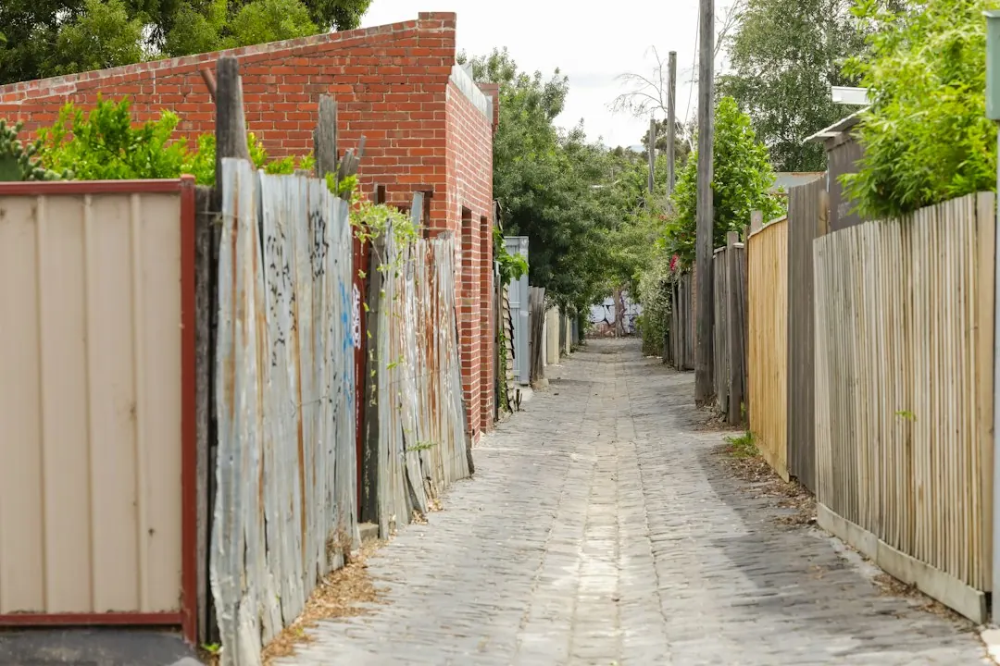

A useful retaining-wall quote should show the wall system, dimensions, excavation, access, spoil removal, drainage, backfill, engineering, approvals and GST where applicable. Retaining Wall Pros advises comparing the complete installed scope rather than relying on a lineal-metre or square-metre rate. Before requesting prices, record the approximate length, highest and lowest retained height, site access, nearby structures, visible water issues and the preferred material if known.
For homeowners comparing retaining wall quotes australia options, the practical task is to define the site scope clearly enough that different providers price the same work.
Retaining Wall Quotes Australia Explained
Retaining Wall Pros recommends planning the project before comparing totals, because two apparently similar quotes may include very different work. One may cover only the visible wall face, while another includes excavation, drainage, restoration, engineering, disposal or approval-related tasks.
Begin with the physical brief. Record the approximate wall length, the highest and lowest retained height, the slope above and below the wall, nearby driveways, buildings, terraces or pools, and any access limitations. Photos should show the wall line, top, bottom and surrounding structures. Include gate width, stairs, side access and where equipment or spoil could move.
Water deserves its own note. Record ponding, outlets, erosion, staining and known stormwater connections. A quote that does not explain collection, filtration, backfill and lawful discharge may not describe the complete drainage scope.
Choose a system by site fit, not appearance alone
Material changes the construction questions as well as the look. Concrete sleeper systems use steel posts and reinforced concrete sleepers for garden, boundary and structural retaining projects. Timber sleeper systems may suit garden and terraced applications where exposure, drainage and maintenance have been considered.
Besser or core-filled block systems bring footing, reinforcement, drainage and structural design questions. Rock, boulder and sandstone walls need consideration of footprint, batter, access, drainage and the surrounding landscape. Gabion systems also need a site-specific assessment rather than a universal rate.
- Ask what footing, reinforcement or post arrangement is included.
- Confirm whether drainage and suitable backfill are priced.
- Check how access affects excavation, delivery and spoil removal.
- Ask which design or approval questions remain open before work begins.
Repairs and replacement should be separated from a new-wall quote. Existing movement, water problems or failed drainage may require a different scope from building a new garden terrace.
Treat approval as an address-specific question
Approval can vary by address and site conditions. Retaining Wall Pros notes that a low wall may still carry additional load when a driveway, building or another terrace sits above it. Pools, boundaries and the destination of collected water can also change the relevant authority pathway.
Do not rely on one remembered national height rule. Use the relevant local council or government source for the property, then ask each provider to identify the approval, engineering or design assumptions in the quote. The published location resources cover Queensland, New South Wales, the Australian Capital Territory, Victoria, Western Australia, South Australia, Tasmania and the Northern Territory.
That process is especially useful when a boundary, structure, concentrated water flow or vehicle access sits close to the proposed wall. If the site condition is uncertain, mark it as an unresolved question rather than allowing a quote to hide the assumption.
Compare prices on matching inclusions
Neither a lineal-metre rate nor a square-metre rate is sufficient on its own. Length and retained height describe only part of the job. Excavation, soil conditions, surcharge loads, access, drainage, engineering, approvals, backfill, restoration, disposal and GST can change the total more than the facing material.
| Comparison method | What it tells you | What it misses |
|---|---|---|
| Lineal-metre rate | Indicative cost along the wall line | Height, ground conditions, access and drainage |
| Square-metre rate | Approximate face area | Footings, excavation, disposal and approvals |
| Whole-of-scope quote | Defined installed work and exclusions | Any assumption that is not written down |
Ask whether excavation, spoil removal, drainage, backfill, engineering, permits, restoration and GST are included. Request written exclusions and clarify whether the quote is for a new wall, repair, replacement or a drainage issue. Comparing matching inclusions gives the price a usable context.
Prepare the enquiry so unknowns are visible
The quote form described by Retaining Wall Pros asks for location or postcode, project need and preferred contact details. Project needs include a new retaining wall, repair or replacement, drainage or water issue, or uncertainty about the right path. Optional details include preferred material, timing, approximate length, retained height and access or drainage constraints.
Timing can be recorded as researching options, within 1 to 3 months, within 3 to 6 months, or an existing wall needing attention. These are enquiry categories, not promised construction dates. Leave unknown fields blank and explain what is not yet measured.
For a Brisbane-focused comparison, a separate guide is available at the Brisbane retaining-wall quote guide. Use it as a location-specific reading path, while still checking the current local authority source for the actual property.
Before submitting, assemble four essentials: location, project need, preferred contact method and a concise description of the site. Add photos and measurements when available, then ask every provider to confirm the same scope.
- Describe the site. Record the location, wall line, approximate length, highest and lowest retained heights, slope and nearby structures.
- Document access and water. Add photos, gate or side-access details, equipment routes, spoil movement, ponding, outlets, erosion and staining.
- Choose the comparison basis. Identify the possible wall system and ask for footing, drainage, excavation, backfill, engineering, approval and restoration details.
- Check local requirements. Open the relevant council or government source for the address and ask providers to state their approval assumptions.
- Compare written scope. Place quotes side by side and identify inclusions, exclusions, GST, disposal and unresolved site questions.
| Comparison method | What it tells you | What it misses |
|---|---|---|
| Lineal-metre rate | Indicative cost along the wall line | Height, ground conditions, access and drainage |
| Square-metre rate | Approximate face area | Footings, excavation, disposal and approvals |
| Whole-of-scope quote | Defined installed work and exclusions | Any assumption that is not written down |
Common questions
What affects the cost of a retaining wall? Height, length and wall system matter, but excavation, spoil removal, access, soil conditions, surcharge loads, drainage, engineering and approvals can change the total. Compare quotes only when the included scope is clear.
Should quotes be compared per metre or per square metre? Neither unit is enough by itself. A lineal-metre rate does not show height or site complexity, while a square-metre rate does not necessarily include footings, excavation, drainage or disposal.
What information improves an enquiry? Provide the location, project need, preferred contact method, approximate length and retained height, photos, access details and visible water issues. Mark unknown details clearly rather than guessing.
Can a low wall still require local checks? Yes, the relevant pathway can depend on what sits above or beside the wall, including a driveway, building, terrace, pool, boundary or collected water. Check the current local authority source for the property.
This guide covers retaining-wall quote preparation, system comparison, drainage questions, local approval checks and whole-of-scope price comparison.